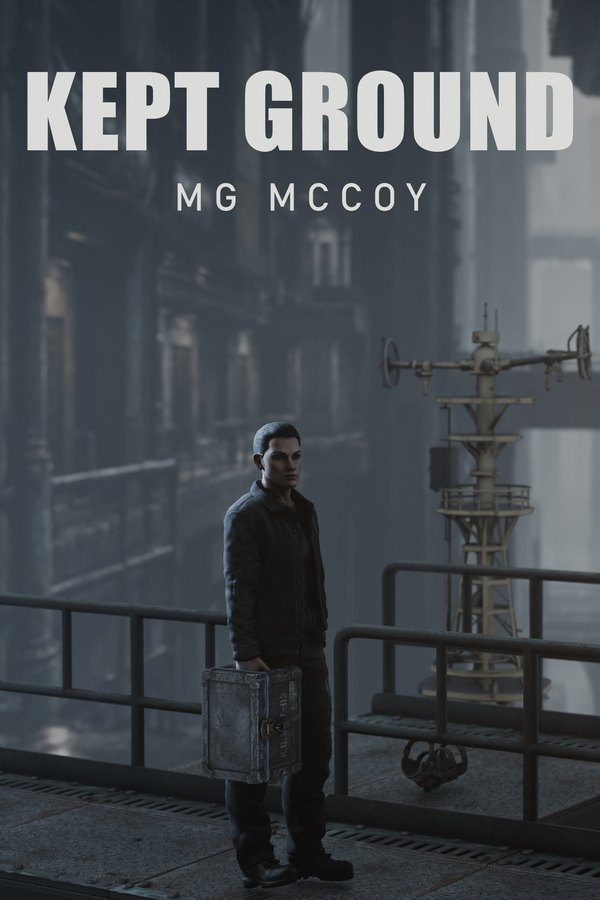

Kept Ground · Book One of The Entropic Heir · dystopian literary fiction
She carries it out in the day. Nobody takes it off her hand.
Sal Ward keeps a tin under the bench and a sister who wants dirt. In Nine-Below the cold comes up through the floor, bolts go soft, and a street can be taken off in a night.
A woman with a slate walks the rows. A rod goes ahead of her. Where it stops, they go in. The tin will not stay in a wall, or under a floor, or in the dark.
So Sal carries it out. Down her own row, past every door, out to the edge where the stack stops and the terrace is watching. Kept Ground is that walk, and what it costs.
Close, cold and underground. The ebook is out now. The audiobook, 65 chapters and eleven and a half hours, follows; hear its first five minutes below.
Know when the audiobook lands
Enter your email and you are on the readers list: one email when the Kept Ground audiobook and paperback are out, and one when any new book comes out. The same list sends the first chapter of Scribe 2106 free, with four short emails about that book over two weeks.
We send a confirmation first; nothing arrives until you click it. Unsubscribe in any email. Privacy.
How it was made. The Kept Ground audiobook is AI-narrated (ElevenLabs), directed and approved by the author: voice cast, pronunciations fixed and every chapter signed off by me. It is not a human reading, and I will never describe it as one. The sample below lets you hear it before you decide.

Five minutes
Nine-Below, from the first line.
The opening of Chapter 1, “The Rot”, as it will sound in the audiobook. Self-hosted, no third-party player; the file only loads when you press play.
“The tin will not stay in a wall, or under a floor, or in the dark.”Kept Ground
Already sold? The full book
Read it now. Listen soon.
Kindle edition out 18 October 2026. The paperback and the audiobook (unabridged, 65 chapters, 11 hr 28 min) follow; their links go here when they are live.